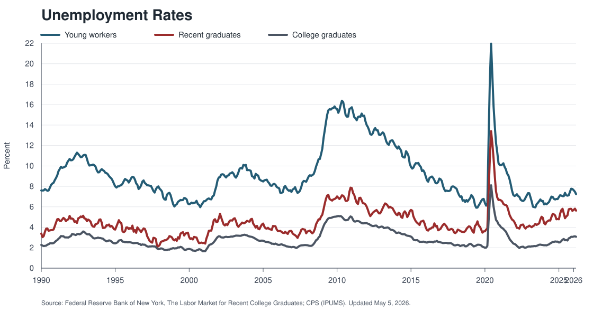
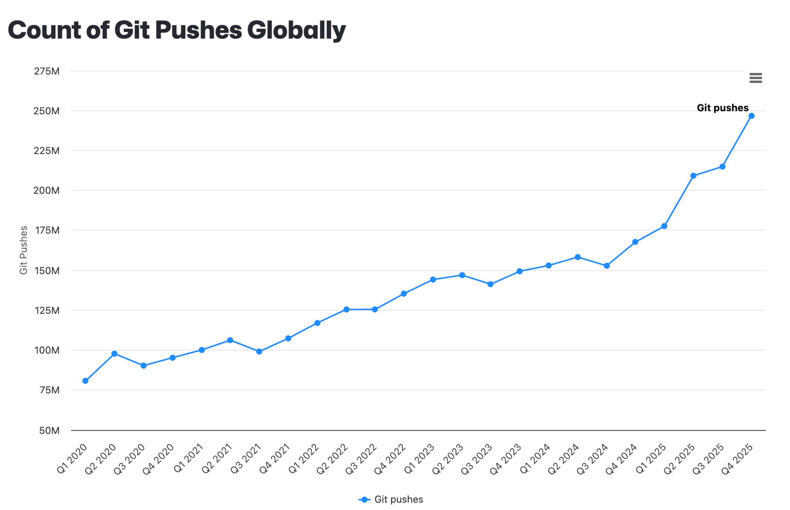
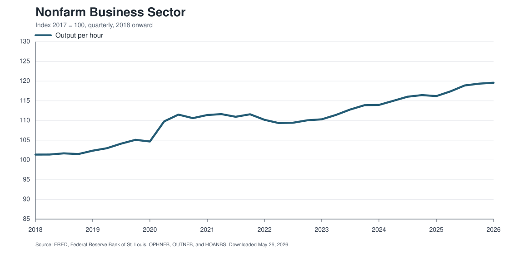
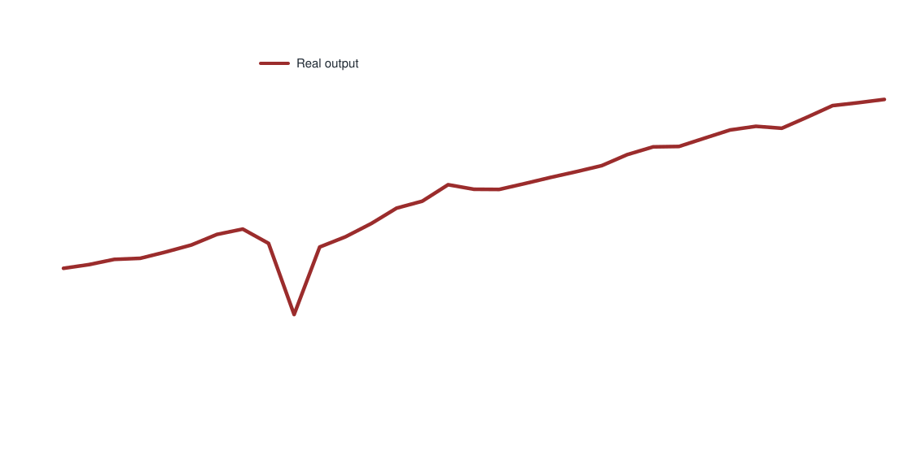
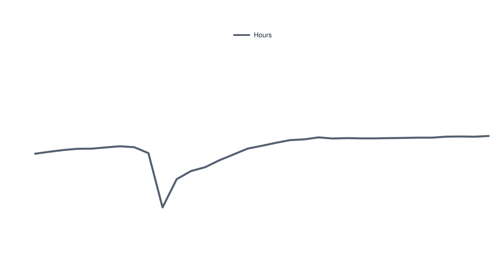

Early Warning Signs and the Transition
Discussion
Evan Rose
University of Chicago
Squinting At Time Series
At the aggregate level, the labor market still looks pretty healthy.

If AI is already reshaping the labor market, it is not yet obvious in the broad aggregates.
Evidence From Exposed Workers Is Contested
- Demand changes among adopting firms are difficult to interpret because adoption is endogenous.
- There is a clear trend in "AI-washing" layoff explanations.
- Post-pandemic changes in the nature of work make attribution even harder.
Empirical challenge: we are left with either cross-occupation DiD, where exclusion is tricky, or cross-firm DiD, where adoption is a choice.
Either one gives us relative effects.
Even The Clearest Cases Are Messy
Customer service is a natural place to look, but the secular trend predates generative AI.
"There is expected to be less demand for customer service representatives, especially in retail trade, as their tasks continue to be automated. Self-service systems, social media, and mobile applications enable customers to do simple tasks without interacting with a representative. Advancements in technology will gradually allow these automated systems to do even more tasks. Some companies will continue to use in-house service centers to differentiate themselves from competitors, particularly for complex inquiries such as refunding accounts or confirming insurance coverage."
Source: U.S. Bureau of Labor Statistics, Occupational Outlook Handbook, Customer Service Representatives.
- Projected decline: about 5 percent, versus about 3 percent growth across all occupations.
- The question is whether generative AI accelerates an existing trend or creates a new break.
Is AI having measurable labor-market effects today? Not obvious to me just yet.
1. Hicks-Marshall Strikes Back
If AI Is Useful, Unit Labor Demand Should Fall
Holding output fixed, AI should weakly reduce labor requirements in a sector.
\[
\Delta \log(L/Q) = -\sigma s_{AI}\Delta \theta_{AI}
\]
- \(\sigma\): elasticity of substitution between labor and AI/IT.
- \(s_{AI}\): AI cost share.
- \(\Delta \theta_{AI}\): AI productivity growth.
Unless production is Leontief, output-constant labor demand should fall. The size depends on substitutability and cost shares.
Same intuition holds in a task-based model.
How Substitutable Is AI?
My guess is that for most sectors \(\sigma \sim 1\) at a high level, at least right now.
- Interpretation: AI and labor are substitutes.
- Why? This implies that AI cost shares should be staying roughly the same or increasing slightly, which seems consistent with reality.
- JPMorgan says technology expense is expected to be about $19.8B, up 10% year over year, while rising by less than 1 percentage point as a share of total costs.
It would be useful to formalize this with real data.
But Total Labor Demand Is Mostly About Scale
Productivity improvements lower unit costs, which can expand output.
\[
\Delta \log L = (\eta - \sigma)s_{AI}\Delta \theta_{AI}
\]
- If \(\eta > \sigma\), scale effects can dominate substitution.
- If \(\eta < \sigma\), substitution dominates.
- Near-zero net effects are plausible when demand elasticity and substitution are similar.
- For banking services, \(\eta \sim 1\) does not seem crazy, which may be close to the JPMorgan scenario.
The key question is not simply whether AI substitutes for labor. It is whether cheaper output expands demand enough to offset that substitution.
Cost Shares May Still Be Small
$19.8B
JPMorgan expected technology expense, up about 10 percent year over year. AI is likely a small part of total tech spending.
0.3%
UnitedHealth AI-related initiatives as a share of revenue, roughly 2.4 percent of operating costs.
Even if AI is productive, aggregate labor-market impacts may be small when AI cost shares are still tiny.
2. Putting The Cart Before The Horse
Do We Know AI Is Reducing Unit Costs?
All of this analysis requires a world where AI really is decreasing unit costs.
- Credible studies estimate important productivity impacts of AI, but we know it's not always that simple.
- Workplaces are not set up right now to solve the implicit agency issues (just ask my research assistants).
- So I am not sure we know that \(\Delta \theta_{AI}\) is big in production yet.
Activity Is Going Up
It certainly seems like total coding activity is rising.

But are we getting more value? More activity is not the same thing as more useful output.
Where Is The Value Showing Up?



Where Is The Value Showing Up?
- Where are the new products and services? New ideas?
- We can't even decide if the unit distance conjecture is a big deal.
- Arguably most consumer surplus from AI is from the tools themselves (e.g., ChatGPT as therapy), not as inputs in production of other stuff.
It is hard to expect major labor-market shifts before firms have figured out how to reliably capture the productivity boost.
3. Would We Know It When We Saw It?
Diffusion Can Be Slow Even When The Advantage Is Clear
- The Ford Model T rolled off the line in 1908.
- Carriage and wagon employment did not immediately crater.
- The horse and mule population peaked between 1910 and 1920.
- In 1920, there were still about twice as many horses as automobile registrations.
Even Obvious Cost Advantages Do Not Guarantee Instant Transition
Census estimates for spring plowing costs per acre:
Maybe generative AI will diffuse faster. But maybe not. Complementary investments, institutions, and adjustment frictions matter.
The Elevator Operator Example
Automatic elevators existed in the 1920s.
When did elevator operator employment peak?
Answer: 1950. New installations then switched to automatic elevators very quickly.
Are we in 1930, 1940, or 1950 for generative AI? I am not sure.
Managing The Transition
I am not an AI skeptic. Structural change is coming.
There is only one answer: reallocation. The work people do will have to change, just as it has for the last 150 years and more.
What Do We Actually Know How To Do?
- The job-training literature is mostly about programs for people with limited formal education, limited labor-market experience, or low incomes.
- That evidence base is a poor guide for many AI-exposed white-collar workers.
- What do we do for people with roughly 10 years of experience? Back to college? Short training? Nothing?
Research Agenda
- Which workers and sectors are most exposed to AI-driven reallocation?
- Where can those workers transition?
- What skills, credentials, or institutions actually help?
- How do we speed reallocation without pretending adjustment is costless?
The transition question is not secondary. It is where the policy problem ultimately lands.
Takeaways
- The data today do not yet show an obvious AI labor-market rupture.
- Near-zero effects are consistent with balanced scale and substitution, small cost shares, or unrealized productivity gains.
- Historical transitions warn against over-reading the early period.
- We need much better evidence on reallocation for AI-exposed workers.
Comments For Today